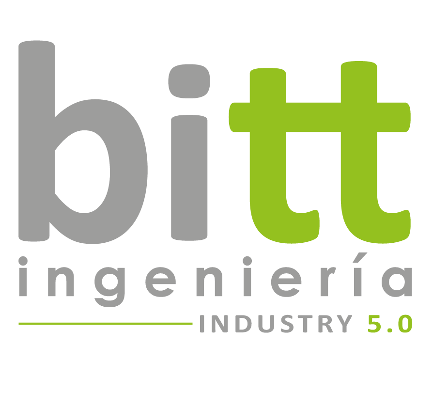

BottMillDigitaliza producción, máquinas, consumos y mantenimiento. Todo accesible desde el chat en vivo, en tiempo real, desde el móvil de quien toma las decisiones.
🎯 A medida · 📦 Llave en mano · 🔒 Datos siempre en localLa información de producción, máquinas, consumos y próximas roturas vive en cuadernos, en la cabeza del operario o no existe. Las decisiones se toman a ojo.
Tablas, núcleos, costeros, m³ — invisibles hasta final de turno.
Te enteras cuando una se rompe. No antes.
Cambias el motor cuando deja de funcionar. Cada parada cuesta turnos enteros.
¿Qué máquina dispara la factura este mes? Nadie lo sabe.
BottMill instala un equipo dedicado en el aserradero que recoge datos de máquinas, sensores y sistemas existentes — y los convierte en un asistente en chat en vivo para gerencia, planta, mantenimiento y administración.
Tablas, núcleos, costeros y m³ por línea — al minuto.
OK, aviso o parada de cada máquina. Horas operativas. Paros con duración.
Vibración, temperatura, horas. Alerta antes de la rotura.* Requiere sensores específicos
kWh hoy, pico instantáneo, baseline mensual.* Requiere sensores específicos
PDF automático cada día 1 — chat en vivo y email.
Pregunta como hablas. Sin formación, sin VPN, sin Excel.
Conversaciones reales de cómo BottMill responde en el día a día del aserradero.
No vendemos un paquete cerrado. Definimos juntos qué medir, por dónde empezar y qué ampliar más adelante.
Vamos al aserradero. Vemos qué máquinas hay, qué datos ya se generan y qué te gustaría poder responder desde el móvil.
Plan claro con dos fases: qué se puede medir ya con lo que tienes, y qué sensores adicionales hacen falta para ampliar.
Llevamos el equipo configurado. Instalamos los sensores donde toque. Conectamos a tu red. Tu equipo no instala nada.
Damos de alta a los usuarios, acordamos umbrales y canales de alerta. 15-20 minutos por usuario.
El bot vive contigo. Ampliamos métricas y sensores según vayáis viendo qué falta. Sin reinstalar nada.
Mismo bot. Mismo equipo. Cuatro modos de usarlo según para qué.
Empezamos por lo que más duele hoy. Crecemos cuando lo decidas.
| Fase 1 — Arranque | Fase 2 — Ampliación |
|---|---|
| Conteo de tablas, núcleos, costeros por línea | Sensores de vibración en motores críticos |
| Volumen m³ por línea | Medida de consumo eléctrico por línea |
| Estado y horas operativas de máquinas | Alertas predictivas por umbrales |
| Paros con duración | Informe mensual con sección mantenimiento |
| Resumen semanal + informe mensual PDF | Métricas adicionales que detectéis útiles |
En un momento en el que todo el mundo está preocupado por dónde acaban sus datos, BottMill está diseñado desde el primer minuto asumiendo que los tuyos son sensibles y se quedan en casa.
El sistema vive en local, en un equipo bajo tu control. No hay servidor externo ni backups remotos.
El modelo que entiende tus preguntas corre on-device. Sin OpenAI, sin Anthropic, sin Google.
El bot consulta — no escribe en PLCs ni sistemas productivos.
Sólo los IDs de Telegram autorizados pueden consultar. Cualquier otro chat se ignora.
Sin Docker, sin telemetría a terceros. La única salida es HTTPS a Telegram.
Todo el código usa parámetros. Sin riesgo de inyección.
Lo único que sale del aserradero es el texto de los mensajes que el bot envía a los usuarios autorizados, transportado por HTTPS al servidor de Telegram. El mismo flujo que cualquier mensaje de WhatsApp.
Lo que suelen preguntarnos antes de dar el paso.
Vamos al aserradero, vemos qué hay, y volvemos con una propuesta clara con fases y prioridades. Sin compromiso.